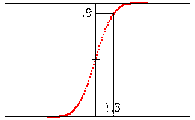
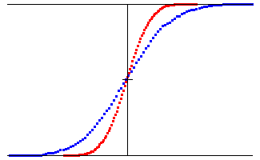

| Here is a more analytical approach. |
| First, generate a list of,
say, 1000 increments |
| Divide the range between the minimum and maximum increments into 100 bins and determine how many of the increments fall into each bin. |
| Then plot the cumulative distribution: the probability of obtaining a value ≤ that represented by each bin. |
| Here is a picture of the cumulative
distribution for |
| For example, the selected point shows |
|  |
| To illustrate self-affinity, we compare the cumulative
distributions for |
| For positive u, the blue dots are shifted to the right by
a factor of |
| That is,
|
|  |
Return to Brownian Motion Self-Affinity.